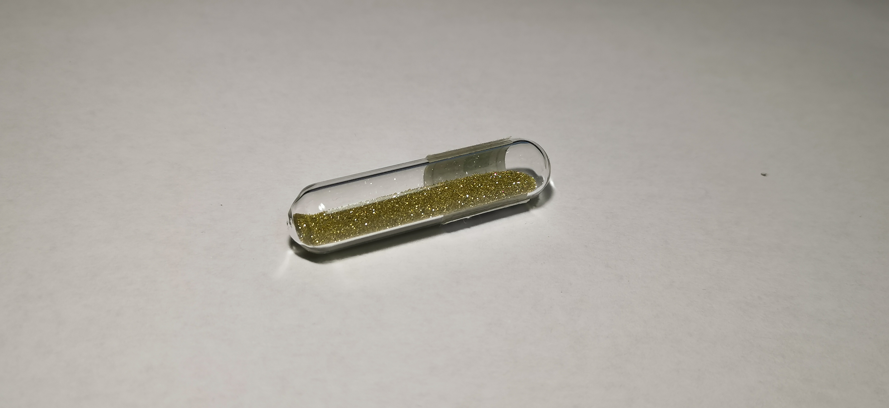
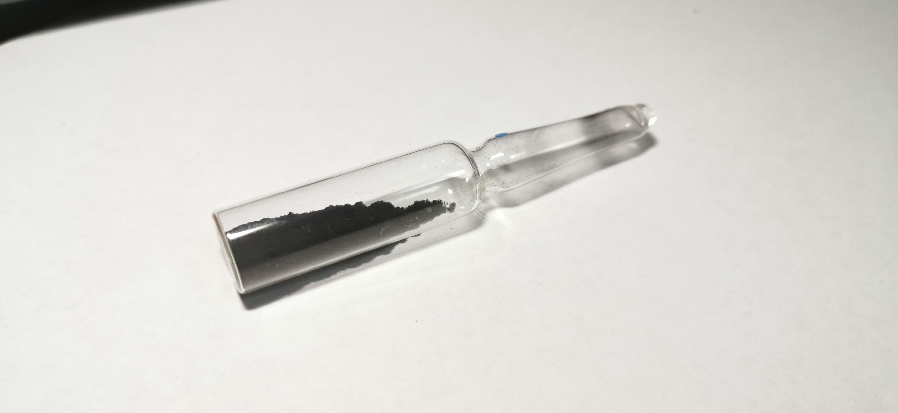

碳
2019.4 人造金刚石 来自冥灵 
人造金刚石：自然界中游离碳有金刚石和石墨两种形态（也有少量其他形态，甚至有文献发现极少量的自然C₆₀）。金刚石常见立方晶型，硬度大，雕刻后棱角分明，被称为钻石，大块的自然金刚石或雕刻面数多的的钻石十分珍贵。我的金刚石样品只有一管人造金刚石，冥灵在商品介绍中有写，由于高温高压生成金刚石的制造工艺，会因晶体中混入氮原子而成黄色。在国外一些商家，有不呈现明显黄色的人造金刚石，我十分希望拥有，当然更希望拥有一枚自然的金刚石。
2020.1 钾石墨 CₓK 自制 
钾石墨：钾石墨来源于艺人蔡徐坤靠“鸡你太美”一梗爆红网络一时化学交流群传出的一张图片，介绍了在熔融钾中掺入石墨可以获得石墨与钾的间层化合物，由于分子式不确定，用CₓK表示，恰好与蔡徐坤名字拼音首字母相同。图片传出时我没有石墨作为原料，后来我简单做了这个实验，也许由于条件粗糙，并没有明显变化。我将产物封在安瓿中，只当作个玩笑。